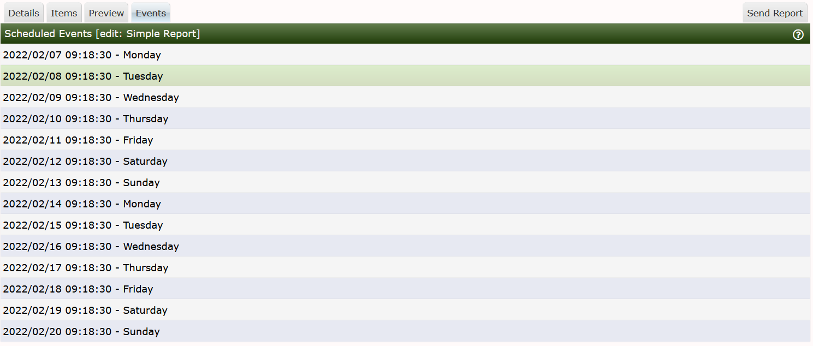

On this page, you can simply see on what dates and approximate times that the Reports scheduler will send future report. You can see from the image below this the report will be sent every day at approximately 09:18:30. The poller frequency or Data Collector interval is 30 seconds on this system.

Currently Cacti does not record past events in a Database table or store the published report in either PDF or other document format in a Database for historical reference.
Copyright (c) 2004-2024 The Cacti Group